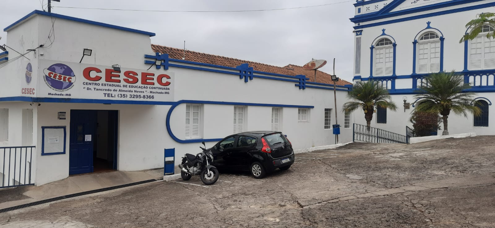

Entre em contato
O CESEC Dr. Tancredo de Almeida Neves está localizado na Praça Olegário Maciel, 12, em Machado - próximo a Casa de Cultura. Venha estudar com a gente!
Nossa secretaria está disponível para atendê-lo de segunda a sexta, das 13h às 21h. Se preferir, você pode entrar em contato pelo telefone 35 3395-8366.
